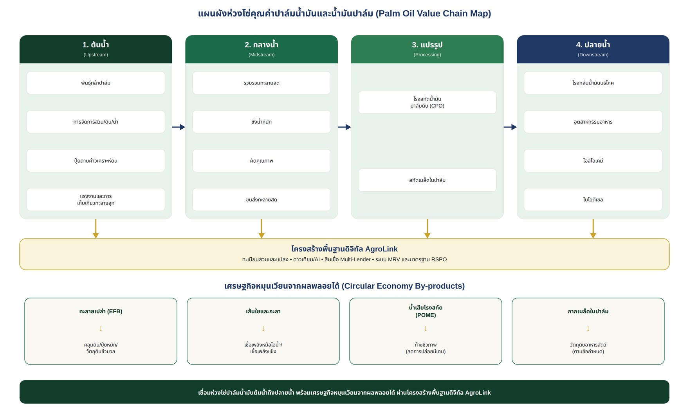

แนวทางการพัฒนาการเกษตรที่ยืดหยุ่นต่อสภาพภูมิอากาศ เพิ่มมูลค่าอย่างทั่วถึง และเชื่อมโยงตลาดด้วยระบบดิจิทัล
เอกสารข้อเสนอเชิงแนวคิด | ตุลาคม 2569 — บริษัท ภักดี คอร์ปอเรชั่น จำกัด (AgroLink)
ปาล์มน้ำมันเป็นพืชเศรษฐกิจสำคัญที่เชื่อมโยงเกษตรกรรายย่อย ลานเท โรงสกัดน้ำมันปาล์มดิบ โรงกลั่น อุตสาหกรรมอาหาร โอลีโอเคมี และพลังงานชีวภาพ ความท้าทายครอบคลุมผลผลิตต่อไร่ที่แตกต่างกัน คุณภาพทะลายสด ต้นทุนปุ๋ยและแรงงาน ความผันผวนของราคา การตรวจสอบย้อนกลับ และผลกระทบต่อสิ่งแวดล้อม
ข้อเสนอหลักคือยกระดับทั้งห่วงโซ่จาก “สวนปาล์ม–จุดรวบรวม–โรงสกัด–โรงกลั่น–ตลาด” พร้อมพัฒนาเศรษฐกิจหมุนเวียนจากทะลายเปล่า เส้นใย กะลา และน้ำเสีย โดยใช้สหกรณ์และกลุ่มเกษตรกรเป็นกลไกหลัก เชื่อมข้อมูลกิจกรรมผ่าน AgroLink Platform เพื่อเพิ่มประสิทธิภาพและความโปร่งใส
| ช่วงห่วงโซ่ | กิจกรรมหลัก | โอกาสยกระดับ |
|---|---|---|
| ต้นน้ำ | พันธุ์กล้า การจัดการสวน ดิน น้ำ ปุ๋ย แรงงาน การเก็บเกี่ยว | กล้าคุณภาพ แผนใส่ปุ๋ยตามผลวิเคราะห์ดิน บันทึกข้อมูลสวน |
| กลางน้ำ | รวบรวม ชั่งน้ำหนัก คัดคุณภาพ ขนส่งทะลายสด | ราคาตามคุณภาพ ลดเวลาหลังตัด ติดตามแหล่งที่มา |
| แปรรูป | โรงสกัดน้ำมันปาล์มดิบ (CPO) และเมล็ดในปาล์ม | เพิ่มอัตราการสกัด ลดสูญเสียพลังงานและน้ำ |
| ปลายน้ำ | โรงกลั่น น้ำมันบริโภค อาหาร โอลีโอเคมี ไบโอดีเซล | มาตรฐานคุณภาพ การกระจายตลาด สัญญาซื้อขาย |
| เศรษฐกิจหมุนเวียน | ทะลายเปล่า เส้นใย กะลา น้ำเสียจากโรงสกัด | ปุ๋ยอินทรีย์ เชื้อเพลิงชีวมวล ก๊าซชีวภาพ |
ต้นปาล์มอายุไม่เหมาะสมหรือพันธุ์ไม่ตรงตามมาตรฐาน การจัดการธาตุอาหารไม่สมดุล ภัยแล้ง ขาดข้อมูลต้นทุนและผลผลิตรายแปลง
คุณภาพทะลายสดไม่สม่ำเสมอ การตัดก่อนสุกหรือส่งโรงงานล่าช้า ความไม่โปร่งใสในการประเมินคุณภาพและราคา
ประสิทธิภาพการสกัดแตกต่างกัน ค่าใช้จ่ายพลังงานสูง และการจัดการของเสียต้องได้มาตรฐาน
ข้อมูลกระจัดกระจาย เกษตรกรรายย่อยเข้าถึงเงินทุนและเครื่องมือได้จำกัด ความเสี่ยงด้านการเปลี่ยนแปลงการใช้ที่ดินและข้อกำหนดผู้ซื้อ
จัดเก็บรหัสเกษตรกร รหัสแปลง พิกัดและขอบเขตแปลงอย่างเหมาะสม บันทึกการรับซื้อ น้ำหนัก วันเก็บเกี่ยว คุณภาพ และปลายทางสินค้า โดยต้องมีสิทธิการเข้าถึงข้อมูลและการคุ้มครองข้อมูลส่วนบุคคล กำหนดแนวทางตรวจสอบความเสี่ยงการบุกรุกป่าและข้อกำหนดมาตรฐานที่เกี่ยวข้อง เช่น RSPO หรือมาตรฐานที่ผู้ซื้อกำหนด โดยไม่ถือว่าการบันทึกข้อมูลเท่ากับได้รับการรับรอง
สนับสนุนการเข้าถึงแหล่งเงินทุนจากธนาคาร สหกรณ์ และผู้ให้บริการทางการเงินที่ได้รับอนุญาต โดยใช้ข้อมูลการผลิตและประวัติส่งมอบสินค้าเพื่อประกอบการประเมินความสามารถชำระหนี้ ทั้งนี้ AgroLink ทำหน้าที่เชื่อมโยงข้อมูลและบริการ ไม่ใช่ผู้ปล่อยกู้
| วัสดุ/ผลพลอยได้ | แนวทางใช้ประโยชน์ | เงื่อนไขสำคัญ |
|---|---|---|
| ทะลายเปล่า (EFB) | คลุมดิน ปุ๋ยหมัก วัตถุดิบชีวมวล | ควบคุมความชื้นและต้นทุนขนส่ง |
| เส้นใยและกะลา | เชื้อเพลิงหม้อไอน้ำ เชื้อเพลิงแข็ง วัสดุมูลค่าเพิ่ม | มาตรฐานมลพิษและคุณภาพเชื้อเพลิง |
| น้ำเสียโรงสกัด (POME) | ผลิตก๊าซชีวภาพและลดการปล่อยมีเทน | ระบบบำบัดและการตรวจวัดจริง |
| กากเมล็ดในปาล์ม | วัตถุดิบอาหารสัตว์ตามข้อกำหนด | คุณภาพและความปลอดภัยวัตถุดิบ |
| โมดูล | หน้าที่ |
|---|---|
| Farmer & Plot Registry | ทะเบียนเกษตรกร สวนปาล์ม และข้อมูลสิทธิการใช้ที่ดินตามที่ได้รับอนุญาต |
| Farm Management & Advisory | บันทึกต้นทุน ปุ๋ย ผลผลิต กิจกรรมสวน และคำแนะนำเชิงพื้นที่ |
| Satellite + AI Monitoring | ติดตามสภาพพื้นที่ ความเปลี่ยนแปลงพืชพรรณ และความเสี่ยงที่ตรวจสอบภาคสนามได้ |
| Cooperative & Collection OS | รับซื้อ ชั่งน้ำหนัก คุณภาพ สต็อก การจ่ายเงิน และติดตามล็อต |
| Marketplace & Logistics | จับคู่ผู้ซื้อ–ผู้ขาย จัดรอบขนส่ง และบันทึกธุรกรรม |
| Finance Connector | ส่งต่อข้อมูลที่ได้รับความยินยอมแก่ผู้ให้สินเชื่อเพื่อประเมินความเสี่ยง |
| Sustainability & MRV | ตรวจสอบย้อนกลับ ตัวชี้วัดสิ่งแวดล้อม และหลักฐานการตรวจประเมิน |
สถาปัตยกรรมข้อมูลควรออกแบบให้เชื่อมต่อระบบของสหกรณ์ โรงสกัด และหน่วยงานที่เกี่ยวข้องผ่าน API โดยมีมาตรการความมั่นคงปลอดภัย การกำหนดสิทธิ์ และการตรวจสอบย้อนหลัง
เลือกพื้นที่นำร่องที่มีเกษตรกรรายย่อยรวมกลุ่ม สหกรณ์หรือลานเทที่พร้อมร่วมมือ และโรงสกัดปลายทางที่สามารถแลกเปลี่ยนข้อมูลได้ กำหนดขนาดพื้นที่และจำนวนผู้เข้าร่วมหลังสำรวจข้อมูลฐาน ไม่กำหนดวงเงินงบประมาณในรายงานฉบับนี้
| ระยะ | กิจกรรม | ผลส่งมอบ |
|---|---|---|
| ระยะที่ 1: เตรียมความพร้อม | สำรวจฐานข้อมูล คัดเลือกภาคีและแปลงนำร่อง ประเมินความเสี่ยง | ทะเบียนผู้เข้าร่วม ข้อมูลฐาน และข้อตกลงแลกเปลี่ยนข้อมูล |
| ระยะที่ 2: ทดลองปฏิบัติ | บันทึกกิจกรรมสวน รับซื้อดิจิทัล ติดตามคุณภาพ และให้คำแนะนำ | ระบบต้นแบบที่ใช้งานจริงและรายงานผลรายรอบ |
| ระยะที่ 3: ประเมินและขยายผล | วิเคราะห์ผลผลิต รายได้สุทธิ ต้นทุน คุณภาพ และสิ่งแวดล้อม | รายงานประเมินผลและแผนขยายผล |
| มิติ | ตัวชี้วัดเสนอใช้ | วิธีประเมิน |
|---|---|---|
| เศรษฐกิจ | ผลผลิตทะลายสด/ไร่ ต้นทุน/กก. รายได้สุทธิ/ครัวเรือน | เทียบข้อมูลฐานและข้อมูลหลังดำเนินการ |
| คุณภาพ | สัดส่วนทะลายผ่านเกณฑ์ ระยะเวลาจากเก็บเกี่ยวถึงโรงสกัด | บันทึกรับซื้อและสุ่มตรวจคุณภาพ |
| สังคม | จำนวนเกษตรกรรายย่อยและสหกรณ์ที่เข้าร่วม สัดส่วนผู้ใช้งานต่อเนื่อง | ทะเบียนและบันทึกการใช้งาน |
| สิ่งแวดล้อม | การใช้ปุ๋ยตามคำแนะนำ การจัดการของเสีย การเปลี่ยนแปลงการใช้ที่ดิน | หลักฐานภาคสนามและข้อมูลเชิงพื้นที่ |
| ดิจิทัล | สัดส่วนล็อตที่ตรวจสอบย้อนกลับได้ ความครบถ้วนของข้อมูล | ตรวจสอบระบบและตัวอย่างธุรกรรม |
การพัฒนาห่วงโซ่คุณค่าปาล์มน้ำมันควรมุ่งเพิ่มผลผลิตต่อพื้นที่เดิม ลดความสูญเสียระหว่างเก็บเกี่ยวและขนส่ง ส่งเสริมความโปร่งใสของการซื้อขาย และต่อยอดผลพลอยได้อย่างมีความรับผิดชอบ โดยสหกรณ์และผู้ประกอบการกลางน้ำเป็นจุดเชื่อมสำคัญ การใช้ AgroLink เป็นโครงสร้างพื้นฐานข้อมูลร่วมจะช่วยให้เกษตรกร ผู้ซื้อ สถาบันการเงิน และหน่วยงานกำกับดูแลทำงานบนข้อมูลที่ตรวจสอบได้ ทั้งนี้ต้องทดสอบความคุ้มค่าและผลลัพธ์จริงก่อนขยายผล
ไม่ว่าจะในฐานะเกษตรกร สหกรณ์/กลุ่มเกษตรกร โรงสกัด ผู้ให้บริการเครื่องจักร สถาบันการเงิน หรือหน่วยงานภาครัฐ ติดต่อทีมงาน AgroLink เพื่อขอข้อมูลเพิ่มเติมได้ทันที